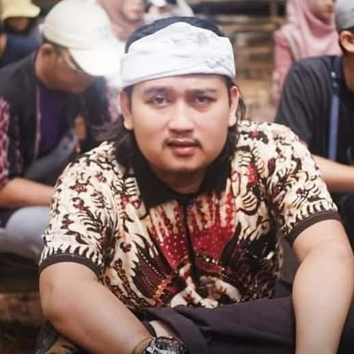
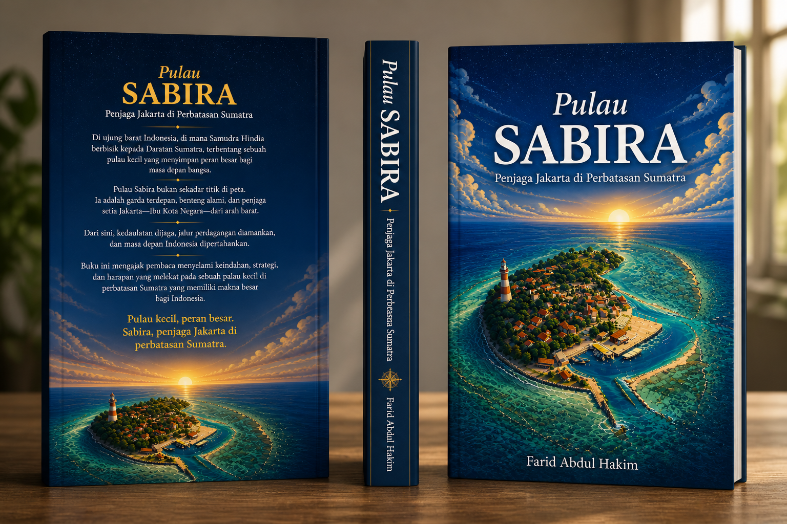
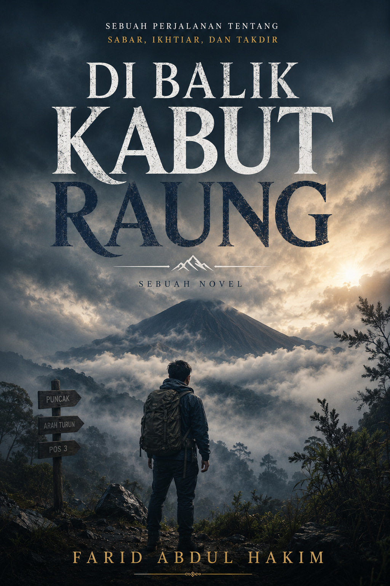
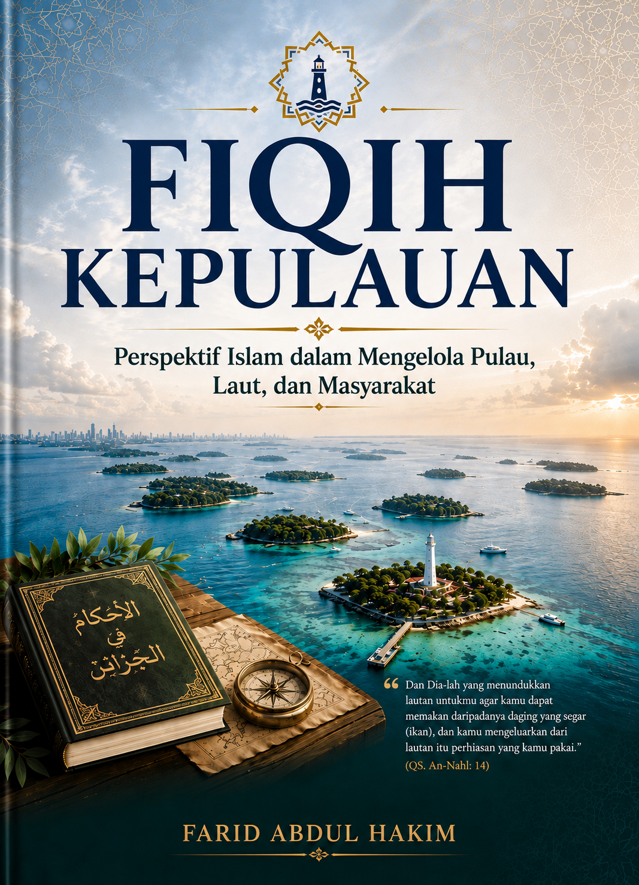
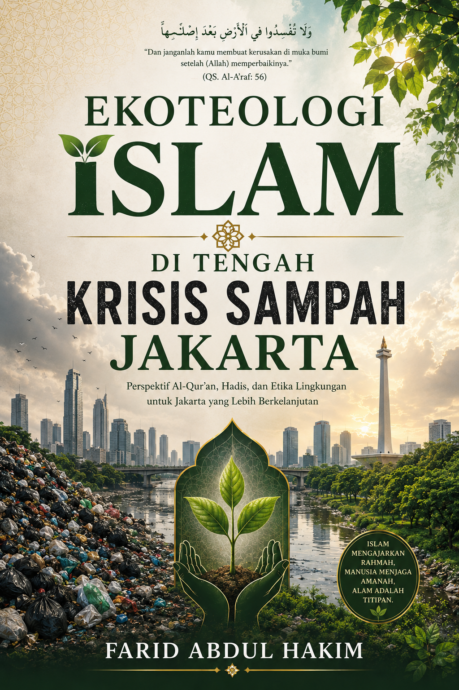

Penulis | Content Creator Dakwah | Pegiat Dakwah | Community Development | Pemerhati Masyarakat Pesisir & Kepulauan
JEJAK.MULAI · INDONESIA
TITIK 01
Farid Abdul Hakim adalah penulis, content creator dakwah, penggiat dakwah, dan pegiat pemberdayaan masyarakat yang memiliki perhatian besar terhadap isu keislaman, pendidikan, lingkungan, serta pengembangan masyarakat di wilayah pesisir dan kepulauan.
Ia aktif menghadirkan konten-konten dakwah yang membahas persoalan kehidupan sehari-hari dengan bahasa yang sederhana, kritis, dan relevan, khususnya bagi generasi muda. Melalui media sosial dan berbagai karya kreatif, ia berupaya menyampaikan pesan-pesan Islam dengan pendekatan yang dekat dengan realitas kehidupan masyarakat.
Sebagai penulis, Farid banyak mengembangkan karya bernuansa Islami, baik dalam bentuk buku, kajian sosial-keislaman, maupun novel. Salah satu fokus pemikirannya adalah fiqih kepulauan dan fiqih lingkungan, terutama dalam melihat persoalan masyarakat pulau-pulau kecil seperti Kepulauan Seribu dan Pulau Sabira.
Pengalaman dalam pemberdayaan masyarakat dan perjalanan ke berbagai wilayah Indonesia turut membentuk perspektifnya dalam memahami keragaman sosial, budaya, pendidikan, ekonomi, dan lingkungan masyarakat.
Melalui tulisan, dakwah, dan konten digital, Farid Abdul Hakim berkomitmen menghadirkan karya yang mencerahkan, membangun kesadaran, dan mendorong generasi muda untuk lebih dekat dengan Islam serta peduli terhadap persoalan masyarakat dan lingkungan.
TITIK 02

Penjaga Jakarta di Perbatasan Sumatra — buku karya Farid Abdul Hakim.

Sebuah perjalanan tentang sabar, ikhtiar, dan takdir — novel karya Farid Abdul Hakim.
Novel yang terinspirasi dari kisah luka yang terus diulang zaman — karya Farid Abdul Hakim.

Perspektif Islam dalam Mengelola Pulau, Laut, dan Masyarakat — karya Farid Abdul Hakim.

Perspektif Al-Qur'an, Hadis, dan Etika Lingkungan untuk Jakarta yang Lebih Berkelanjutan — karya Farid Abdul Hakim.
TITIK 03